SCOUT GEIGER
Answer: one small nightly job and one table. It is built and it was run twice today. It takes about 2 minutes on a temporary Fly machine: it reads the Massive daily files for the last 1,121 trading days and makes about 30 Massive calls. It scored 5,624 tickers as of the 2026-09-25 close: 5,305 US common stocks, 137 listed ETFs and 182 other lines from the tree. It uses the Hub Geiger's own maths on its three daily-bar rungs (daily, 3-day, weekly) and nothing else. Nothing goes on the Hub except a slim bar on the market map, where the full Geiger has no reading.
WHAT IS LIVE RIGHT NOW
- Code, pushed: provider branch
provider/scout-geiger-20260928(the job, the table migration 0022 with its rollback, and a read-only chart API route/v1/scout-geiger). Hub branchcandidate/scout-geiger-20260928(this page, and the map's slim bars fed by a snapshot file). - Two temporary runs today, 13:54 and 13:58 ET, on machines that were removed afterwards. They were read-only: nothing was written to R2 or to any table. Their output file is where every number on this page comes from.
- Fly schedule: not installed. Table
massive_stocks.scout_geiger_daily: not created, 0 rows. The exact commands are inrunbooks/SCOUT_GEIGER.mdon the provider branch. Order: image, table, first write, nightly schedule (hourly; it does its work once, after 20:15 ET). Expect about 5,600 rows a night. - The map gets its slim bars from a snapshot file of this run (as of 2026-09-25). Once the nightly job and the chart API route are live, the map can read them nightly instead.
1 · HOW CLOSELY THE SCOUT FOLLOWS THE FULL GEIGER
The maths is the Hub's, to the fourth decimal. I re-ran the live publisher's calculation on the chart API's own daily, 3-day and weekly bars for all 486 served names. It reproduces every one of the 1,458 rung readings in today's Geiger file (largest difference 0.0000005). The scout builds its 3-day and weekly bars from daily bars, using Massive's own calendar: 3-day blocks on a fixed calendar phase, and weeks that start on Sunday. Those rebuilt bars give the same readings to within 0.004 (worst case: DRAM, across an old reverse split). The weights are your saved Equalizer's (receipt d0da9a466c8f): daily 47%, 3-day 38%, weekly 15% once the three are set to add up to 100%.
So the whole gap is the intraday rungs. The full Geiger also reads 3h, 4h, 6h and 12h bars, which carry 59% of its weight. The scout leaves them out. The comparison below is Friday's close (scout) against the full Geiger at 13:53 ET today, whose intraday rungs already hold part of Monday's session. The scout reads higher by +0.126 on average because the intraday rungs were weaker today. On a quiet day the gap should be smaller. This is one snapshot, not a history.
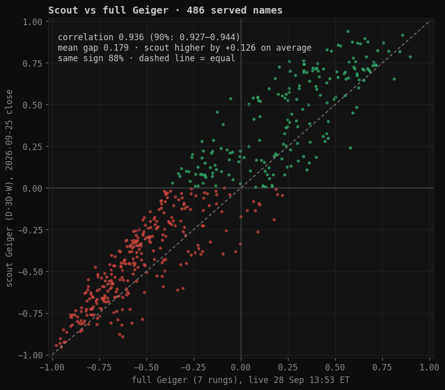
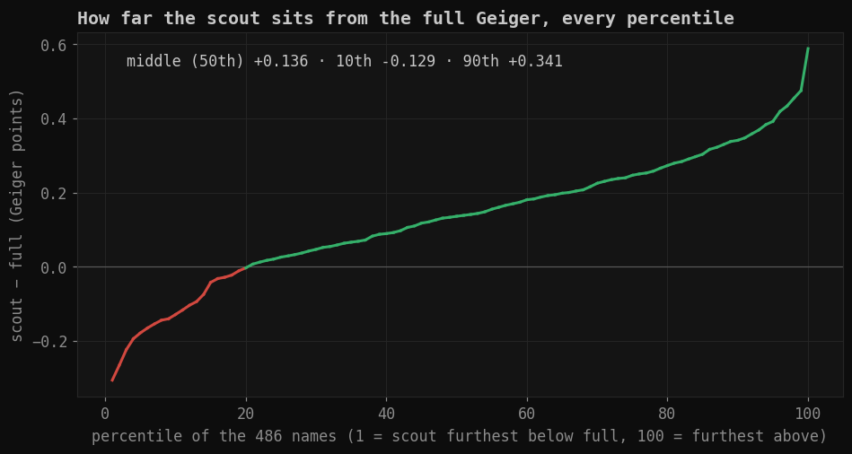
Every percentile of (scout − full): 1st -0.31, 10th -0.13, 25th +0.03, middle +0.14, 75th +0.25, 90th +0.34, 99th +0.48. Same sign as the full Geiger for 88% of names. Trend part: correlation 0.918. Momentum part: 0.895.
What this means for use. The scout is the full Geiger's slow half, exactly. Use it to rank and screen thousands of names by trend and momentum. Do not read it as the Hub's number for a name that also has the full Geiger. On the map it is drawn only where the full Geiger is missing, and it is drawn slimmer.
2 · EVERY TREE FUND: ITS OWN GEIGER, ITS HOLDINGS, THE DIVERGENCE
For each of the 138 funds in the tree, the scout reads every holding it has bars for, weighted by the fund's own weights, and says how much of the fund that covers. The typical fund is read at 99% of its weight. The full Geiger reads 56%, because it only knows served names. Country and foreign funds (EWJ, FXI, MCHI, EWG, EFA, VXUS…) stay near 0%: their holdings are not US listings, so there are no US day-file bars for them. That is stated in every row, not filled in.
A finding before anyone reads divergence as a signal. 107 of 125 funds read more extreme than their holdings' blend, in both directions. A fund's own Geiger is the Geiger of one smooth average price. The blend is an average of many noisy Geigers, and averaging pulls readings toward zero. So a fund almost always "diverges" from its holdings in the same direction as its own reading. The useful signal is a fund's divergence compared with its own usual divergence; that needs the history the nightly table will build (decision 2).
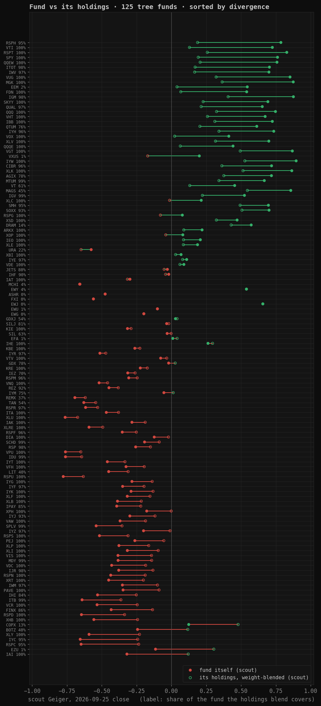
| fund | name | Hub | own · full | own · scout | holdings · scout | scout reads | full reads | own − holdings (scout) | |
|---|---|---|---|---|---|---|---|---|---|
| KIE | SPDR S&P Insurance | full | -0.56 | -0.32 | -0.29 | 100% | 9% | -0.03 | |
| RSPD | Invesco S&P 500 Equal Weight Consumer Discretionary | full | -0.72 | -0.65 | -0.34 | 100% | 40% | -0.31 | |
| RSPU | Invesco S&P 500 Equal Weight Utilities | full | -0.90 | -0.78 | -0.63 | 100% | 61% | -0.14 | |
| RSPG | Invesco S&P 500 Equal Weight Energy | full | -0.19 | +0.08 | -0.08 | 100% | 69% | +0.16 | |
| RSPS | Invesco S&P 500 Equal Weight Consumer Staples | full | -0.57 | -0.52 | -0.31 | 100% | 53% | -0.20 | |
| VGT | Vanguard Information Technology | full | +0.62 | +0.87 | +0.49 | 100% | 85% | +0.37 | |
| RSPT | Invesco S&P 500 Equal Weight Technology | full | +0.46 | +0.83 | +0.26 | 100% | 56% | +0.57 | |
| QQQE | Direxion NASDAQ-100 Equal Weighted Index ETF | full | +0.27 | +0.44 | +0.06 | 100% | 79% | +0.38 | |
| XSD | SPDR S&P Semiconductor | full | +0.33 | +0.47 | +0.32 | 100% | 42% | +0.15 | |
| IAT | iShares U.S. Regional Banks | full | -0.50 | -0.30 | -0.32 | 100% | 30% | +0.02 | |
| IAI | iShares U.S. Broker-Dealers & Securities Exchanges | full | -0.48 | -0.32 | +0.12 | 100% | 36% | -0.44 | |
| XBI | SPDR S&P Biotech | full | -0.15 | +0.07 | +0.03 | 100% | 8% | +0.04 | |
| VDE | Vanguard Energy | full | -0.15 | +0.09 | +0.06 | 100% | 76% | +0.03 | |
| IEO | iShares U.S. Oil & Gas Exploration & Production | full | -0.15 | +0.21 | +0.09 | 100% | 56% | +0.12 | |
| VIS | Vanguard Industrials | full | -0.59 | -0.38 | -0.14 | 100% | 65% | -0.24 | |
| PAVE | Global X U.S. Infrastructure Development | full | -0.54 | -0.35 | -0.09 | 100% | 54% | -0.26 | |
| ARKX | ARK Space & Defense Innovation | full | -0.00 | +0.22 | +0.09 | 100% | 85% | +0.13 | |
| IYK | iShares U.S. Consumer Staples | full | -0.47 | -0.29 | -0.13 | 100% | 80% | -0.16 | |
| VDC | Vanguard Consumer Staples | full | -0.46 | -0.43 | -0.19 | 100% | 75% | -0.24 | |
| VCR | Vanguard Consumer Discretionary | full | -0.76 | -0.53 | -0.25 | 100% | 67% | -0.29 | |
| VPU | Vanguard Utilities | full | -0.89 | -0.76 | -0.65 | 100% | 74% | -0.11 | |
| VAW | Vanguard Materials | full | -0.54 | -0.37 | -0.19 | 100% | 75% | -0.18 | |
| VNQ | Vanguard Real Estate | full | -0.76 | -0.52 | -0.46 | 100% | 60% | -0.06 | |
| VOX | Vanguard Communication Services | full | +0.07 | +0.41 | +0.02 | 100% | 84% | +0.39 | |
| XHB | SPDR S&P Homebuilders | full | -0.60 | -0.56 | -0.24 | 100% | 13% | -0.31 | |
| IYW | iShares U.S. Technology | full | +0.66 | +0.90 | +0.53 | 100% | 92% | +0.37 | |
| SKYY | First Trust Cloud Computing | full | +0.35 | +0.69 | +0.23 | 100% | 48% | +0.46 | |
| ITA | iShares U.S. Aerospace & Defense | full | -0.67 | -0.47 | -0.38 | 100% | 76% | -0.09 | |
| XLK | State Street Technology Select Sector SPDR ETF | full | +0.63 | +0.86 | +0.51 | 100% | 93% | +0.35 | |
| RSPN | Invesco S&P 500 Equal Weight Industrials | full | -0.62 | -0.44 | -0.19 | 100% | 50% | -0.25 | |
| XLRE | State Street Real Estate Select Sector SPDR ETF | full | -0.81 | -0.59 | -0.49 | 100% | 75% | -0.10 | |
| XPH | SPDR S&P Pharmaceuticals | full | -0.37 | -0.18 | -0.00 | 100% | 10% | -0.18 | |
| XLY | State Street Consumer Discretionary Select Sector SPDR ETF | full | -0.73 | -0.59 | -0.23 | 100% | 82% | -0.36 | |
| KBE | SPDR S&P Bank | full | -0.51 | -0.26 | -0.23 | 100% | 6% | -0.04 | |
| XRT | SPDR S&P Retail | full | -0.62 | -0.45 | -0.20 | 100% | 12% | -0.25 | |
| VFH | Vanguard Financials | full | -0.55 | -0.33 | -0.20 | 100% | 70% | -0.13 | |
| FDN | First Trust Dow Jones Internet | full | +0.09 | +0.54 | +0.07 | 100% | 77% | +0.47 | |
| XOP | SPDR S&P Oil & Gas Exploration & Production | full | -0.21 | +0.08 | -0.04 | 100% | 24% | +0.12 | |
| XLP | State Street Consumer Staples Select Sector SPDR ETF | full | -0.46 | -0.38 | -0.16 | 100% | 82% | -0.21 | |
| VUG | Vanguard Growth | full | +0.53 | +0.85 | +0.32 | 100% | 95% | +0.53 | |
| XLF | State Street Financial Select Sector SPDR ETF | full | -0.58 | -0.32 | -0.15 | 100% | 81% | -0.16 | |
| XLU | State Street Utilities Select Sector SPDR ETF | full | -0.88 | -0.76 | -0.67 | 100% | 81% | -0.09 | |
| PEJ | Invesco Leisure and Entertainment | full | -0.30 | -0.26 | -0.05 | 100% | 31% | -0.21 | |
| QQEW | First Trust NASDAQ-100 Equal Weighted | waiting | — | +0.76 | +0.21 | 100% | 77% | +0.55 | |
| XLE | State Street Energy Select Sector SPDR ETF | full | -0.00 | +0.19 | +0.09 | 100% | 92% | +0.10 | |
| KRE | SPDR S&P Regional Banking | full | -0.50 | -0.22 | -0.17 | 100% | 0% | -0.05 | |
| XLI | State Street Industrial Select Sector SPDR ETF | full | -0.55 | -0.32 | -0.10 | 100% | 82% | -0.22 | |
| VTV | Vanguard Value | full | -0.42 | -0.08 | -0.03 | 100% | 85% | -0.04 | |
| XLC | State Street Communication Services Select Sector SPDR ETF | full | -0.04 | +0.21 | -0.01 | 100% | 91% | +0.23 | |
| IYT | iShares U.S. Transportation | full | -0.69 | -0.46 | -0.33 | 100% | 61% | -0.13 | |
| XLB | State Street Materials Select Sector SPDR ETF | full | -0.55 | -0.39 | -0.22 | 100% | 83% | -0.17 | |
| XLV | State Street Health Care Select Sector SPDR ETF | full | +0.68 | +0.70 | +0.32 | 100% | 80% | +0.38 | |
| IYG | iShares U.S. Financial Services | full | -0.52 | -0.28 | -0.14 | 100% | 84% | -0.15 | |
| SPY | State Street SPDR S&P 500 ETF | full | +0.33 | +0.76 | +0.19 | 100% | 90% | +0.57 | |
| VTI | Vanguard Morningstar Total Stock Market ETF | full | +0.20 | +0.72 | +0.13 | 100% | 81% | +0.60 | |
| DIA | State Street SPDR Dow Jones Industrial Average ETF Trust | full | -0.30 | -0.12 | -0.02 | 100% | 100% | -0.10 | |
| MGK | Vanguard Mega Cap Growth | full | +0.59 | +0.87 | +0.36 | 100% | 99% | +0.51 | |
| VHT | Vanguard Health Care | full | +0.62 | +0.67 | +0.26 | 100% | 69% | +0.41 | |
| QQQ | Invesco QQQ Trust, Series 1 | full | +0.41 | +0.75 | +0.32 | 100% | 96% | +0.42 | |
| IBB | iShares Biotechnology | full | +0.60 | +0.72 | +0.31 | 100% | 29% | +0.41 | |
| IHE | iShares U.S. Pharmaceuticals | full | +0.23 | +0.26 | +0.30 | 100% | 60% | -0.03 | |
| IAK | iShares U.S. Insurance | full | -0.55 | -0.28 | -0.19 | 100% | 7% | -0.10 | |
| MTUM | iShares MSCI USA Momentum Factor | full | +0.42 | +0.67 | +0.34 | 99% | 88% | +0.33 | |
| SCHD | Schwab U.S. Dividend Equity | full | -0.52 | -0.19 | -0.09 | 99% | 83% | -0.11 | |
| MDY | State Street SPDR S&P MIDCAP 400 ETF Trust | full | -0.64 | -0.38 | -0.14 | 99% | 3% | -0.24 | |
| IGV | iShares Expanded Tech-Software Sector | full | +0.25 | +0.52 | +0.22 | 99% | 74% | +0.30 | |
| ITB | iShares U.S. Home Construction | full | -0.61 | -0.64 | -0.36 | 99% | 13% | -0.28 | |
| IDU | iShares U.S. Utilities | full | -0.90 | -0.76 | -0.64 | 99% | 74% | -0.12 | |
| SPLV | Invesco S&P 500 Low Volatility | full | -0.74 | -0.54 | -0.35 | 99% | 57% | -0.19 | |
| IJR | iShares Core S&P Small-Cap | full | -0.64 | -0.38 | -0.13 | 98% | 1% | -0.25 | |
| IGM | iShares Expanded Tech Sector | full | +0.67 | +0.88 | +0.41 | 98% | 88% | +0.47 | |
| ITOT | iShares Core S&P Total U.S. Stock Market | full | +0.33 | +0.70 | +0.17 | 98% | 80% | +0.53 | |
| RSP | Invesco S&P 500 Equal Weight ETF | full | -0.56 | -0.26 | -0.15 | 98% | 50% | -0.11 | |
| IWV | iShares Russell 3000 | full | +0.26 | +0.70 | +0.17 | 97% | 80% | +0.53 | |
| IYZ | iShares U.S. Telecommunications | full | -0.45 | -0.20 | -0.01 | 97% | 71% | -0.19 | |
| QUAL | iShares MSCI USA Quality Factor | full | +0.56 | +0.65 | +0.21 | 97% | 86% | +0.44 | |
| IYF | iShares U.S. Financials | full | -0.59 | -0.35 | -0.20 | 97% | 68% | -0.15 | |
| RSPR | Invesco S&P 500 Equal Weight Real Estate | full | -0.76 | -0.62 | -0.53 | 97% | 50% | -0.09 | |
| IYE | iShares U.S. Energy | full | -0.13 | +0.11 | +0.08 | 97% | 80% | +0.03 | |
| IWM | iShares Russell 2000 ETF | full | -0.60 | -0.35 | -0.10 | 97% | 3% | -0.25 | |
| IYR | iShares U.S. Real Estate | full | -0.72 | -0.51 | -0.47 | 97% | 63% | -0.04 | |
| CIBR | First Trust NASDAQ Cybersecurity | full | +0.38 | +0.72 | +0.36 | 96% | 47% | +0.36 | |
| RSPM | Invesco S&P 500 Equal Weight Materials | full | -0.51 | -0.31 | -0.25 | 96% | 73% | -0.06 | |
| RSPF | Invesco S&P 500 Equal Weight Financials | full | -0.57 | -0.35 | -0.25 | 96% | 38% | -0.10 | |
| IYH | iShares U.S. Healthcare | full | +0.72 | +0.73 | +0.34 | 96% | 71% | +0.39 | |
| IYC | iShares U.S. Consumer Discretionary | full | -0.79 | -0.65 | -0.24 | 95% | 73% | -0.41 | |
| SMH | VanEck Semiconductor ETF | full | +0.51 | +0.70 | +0.49 | 95% | 91% | +0.20 | |
| RSPC | Invesco S&P 500 Equal Weight Communication Services | full | -0.65 | -0.65 | -0.24 | 95% | 67% | -0.41 | |
| RSPH | Invesco S&P 500 Equal Weight Health Care | full | +0.67 | +0.79 | +0.19 | 95% | 33% | +0.60 | |
| IYJ | iShares U.S. Industrials | full | -0.55 | -0.30 | -0.12 | 93% | 68% | -0.18 | |
| SOXX | iShares Semiconductor ETF | full | +0.41 | +0.70 | +0.51 | 93% | 80% | +0.19 | |
| REZ | iShares Residential and Multisector Real Estate | full | -0.42 | -0.45 | -0.38 | 92% | 43% | -0.07 | |
| IHF | iShares U.S. Healthcare Providers | full | -0.13 | -0.02 | -0.04 | 90% | 35% | +0.02 | |
| FINX | Global X FinTech | full | -0.53 | -0.43 | -0.14 | 86% | 30% | -0.30 | |
| IPAY | Amplify Digital Payments | full | -0.53 | -0.39 | -0.22 | 85% | 34% | -0.17 | |
| IHI | iShares U.S. Medical Devices | full | -0.42 | -0.53 | -0.25 | 84% | 42% | -0.28 | |
| SILJ | Amplify Junior Silver Miners ETF | full | -0.39 | -0.03 | -0.02 | 81% | 33% | -0.02 | |
| JETS | U.S. Global Jets | full | -0.19 | -0.03 | -0.05 | 80% | 16% | +0.02 | |
| GDX | VanEck Gold Miners ETF | full | -0.40 | -0.02 | +0.03 | 78% | 50% | -0.05 | |
| AGIX | KraneShares Public-Private AI & Technology ETF | full | +0.40 | +0.72 | +0.38 | 78% | 62% | +0.34 | |
| QTUM | Defiance Quantum | full | +0.31 | +0.61 | +0.20 | 76% | 48% | +0.41 | |
| IYM | iShares U.S. Basic Materials | full | -0.35 | -0.05 | +0.01 | 75% | 52% | -0.07 | |
| IEZ | iShares U.S. Oil Equipment & Services | full | -0.42 | -0.31 | -0.26 | 70% | 22% | -0.05 | |
| SIL | Global X - Silver Miners ETF | full | -0.39 | -0.03 | -0.00 | 63% | 52% | -0.03 | |
| VT | Vanguard Total World Stock | full | -0.12 | +0.45 | +0.13 | 61% | 50% | +0.32 | |
| TAN | Invesco Solar | full | -0.79 | -0.63 | -0.54 | 54% | 9% | -0.09 | |
| GDXJ | VanEck Junior Gold Miners ETF | full | -0.36 | +0.03 | +0.04 | 54% | 10% | -0.01 | |
| MAGS | Roundhill Magnificent Seven ETF | full | +0.52 | +0.86 | +0.55 | 45% | 39% | +0.31 | |
| BOTZ | Global X Robotics & Artificial Intelligence | full | -0.45 | -0.24 | +0.12 | 40% | 33% | -0.36 | |
| LIT | Global X Lithium & Battery Tech | full | -0.63 | -0.45 | -0.31 | 40% | 15% | -0.14 | |
| REMX | VanEck Rare Earth and Strategic Metals | full | -0.76 | -0.69 | -0.62 | 37% | 25% | -0.07 | |
| URA | Global X Uranium | full | -0.68 | -0.58 | -0.65 | 22% | 13% | +0.07 | |
| DRAM | Roundhill Memory ETF | full | +0.26 | +0.57 | +0.43 | 14% | 13% | +0.14 | |
| COPX | Global X - Copper Miners ETF | full | -0.23 | +0.12 | +0.48 | 13% | 11% | -0.35 | |
| EWY | iShares MSCI South Korea ETF | full | +0.23 | +0.54 | +0.54 | 4% | 4% | +0.00 | |
| MCHI | iShares MSCI China ETF | full | -0.63 | -0.66 | -0.66 | 4% | 2% | +0.00 | |
| EEM | iShares MSCI Emerging Markets ETF | full | +0.09 | +0.54 | +0.04 | 2% | 2% | +0.50 | |
| EZU | iShares MSCI Eurozone ETF | full | -0.28 | -0.11 | +0.30 | 1% | 1% | -0.42 | |
| EFA | iShares MSCI EAFE ETF | full | -0.24 | +0.01 | +0.04 | 1% | 1% | -0.03 | |
| VXUS | Vanguard Total International Stock | full | -0.26 | +0.20 | -0.17 | 1% | 0% | +0.37 | |
| EWU | iShares MSCI United Kingdom ETF | full | -0.30 | -0.10 | -0.10 | 1% | 1% | +0.00 | |
| ASHR | Xtrackers Harvest CSI 300 China A-Shares ETF | full | -0.77 | -0.48 | -0.48 | 0% | 0% | +0.00 | |
| FXI | iShares China Large-Cap ETF | full | -0.55 | -0.56 | -0.56 | 0% | 0% | +0.00 | |
| EWJ | iShares MSCI Japan ETF | full | +0.18 | +0.66 | +0.66 | 0% | 0% | +0.00 | |
| EWG | iShares MSCI Germany ETF | full | -0.36 | -0.20 | -0.20 | 0% | 0% | +0.00 | |
| AGG | iShares Core U.S. Aggregate Bond | full | -0.83 | -0.81 | — | 0% | 0% | — | |
| SHY | iShares 1-3 Year Treasury Bond ETF | full | -0.78 | -0.76 | — | 0% | 0% | — | |
| IEF | iShares 7-10 Year Treasury Bond ETF | full | -0.92 | -0.87 | — | 0% | 0% | — | |
| TLT | iShares 20+ Year Treasury Bond ETF | full | -0.96 | -0.90 | — | 0% | 0% | — | |
| LQD | iShares iBoxx $ Investment Grade Corporate Bond ETF | full | -0.90 | -0.83 | — | 0% | 0% | — | |
| HYG | iShares iBoxx $ High Yield Corporate Bond ETF | full | -0.94 | -0.85 | — | 0% | 0% | — | |
| DBC | Invesco DB Commodity Index Tracking | full | +0.20 | +0.56 | — | 0% | 0% | — | |
| GLD | SPDR Gold Shares | full | -0.54 | -0.25 | — | 0% | 0% | — | |
| SLV | iShares Silver Trust | full | -0.48 | -0.20 | — | 0% | 0% | — | |
| USO | United States Oil Fund, LP | full | +0.46 | +0.51 | — | 0% | 0% | — | |
| IBIT | iShares Bitcoin Trust | waiting | — | +0.51 | — | 0% | 0% | — | |
| UUP | Invesco DB US Dollar Index Bullish | full | +0.61 | +0.76 | — | 0% | 0% | — | |
| VXX | iPath Series B S&P 500 VIX Short-Term Futures | full | -0.63 | -0.89 | — | 0% | 0% | — |
Headings (US sectors, "the world" and the like) carry no holdings file. Where the names directly beneath a heading have a market value, the heading's blend is those names weighted by market value; see data/nodes.json.
3 · THE 216 PROPOSED ADMISSIONS: WHICH ONES IMPROVE TRACKING
The question, for each name: today the Hub tracks a fund with the blend of the fund's served names. If this name were added, how much closer would that blend follow the fund's own Geiger? The answer is measured in Geiger points of average gap closed, over the last 500 sessions (2024-09-30 → 2026-09-25), using the scout reading every day for every name.
How it was judged, by the statistician standard:
- How many: 500 sessions ≈ 25 independent month-long blocks (neighbouring days are not independent).
- How sure: a 90% range from resampling month-long runs of days.
- How big: the gap closed.
- The word: luck-proof means the gain survives the count of all 328 tests (false-discovery control at 10%) and is positive in both halves of the two years. Leaning means positive in both halves but it could still be luck. No gain covers the rest.
The yardstick is the fund's own served names, not a number chosen by eye. A name earns FULL HUB when three things hold: it is luck-proof; it closes at least as much gap as the middle served name of that fund already does; and the gain is at least 0.005, half a step of the two decimals the Hub prints (a smaller gain could never change a number on screen).
Result: 41 luck-proof, 32 leaning, 131 no gain, 2 without bars (BDXA and CRH.L are not US lines under those tickers), and 10 for KRE.
They cluster where the Hub is thinnest: MDY and IWM (3% of each fund is served), KBE, the biotech funds, IYZ and IHI. In well-covered funds (SPY, QQQ, the tech and sector funds) no proposal closes a visible gap. There, adding names would not change how the Hub reads the fund, so those names are fine as scout-only.
KRE has no served name at all, so there is no blend to improve. Each proposal was scored on how well it tracks KRE alone (correlation): HWC 0.95, FULT 0.92, EWBC 0.90, UBSI 0.90, ONB 0.89, FIBK 0.87, FHB 0.85, COLB 0.81, EBC 0.81, NIC 0.60. Your call; recommendation below.
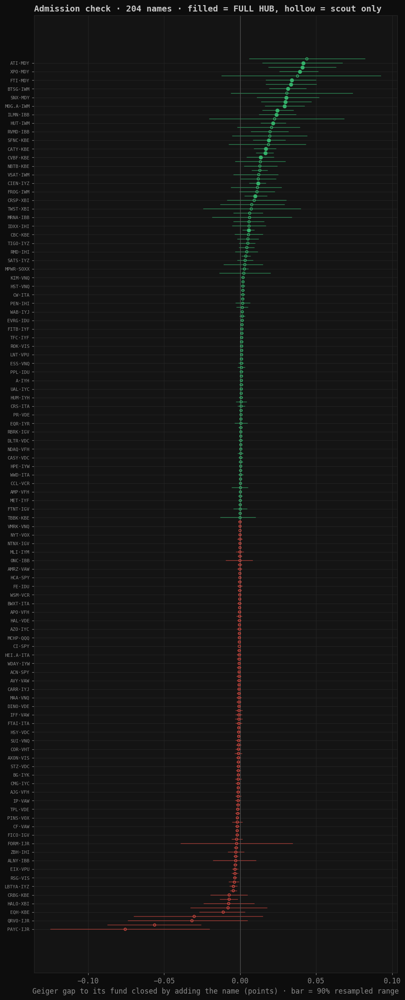
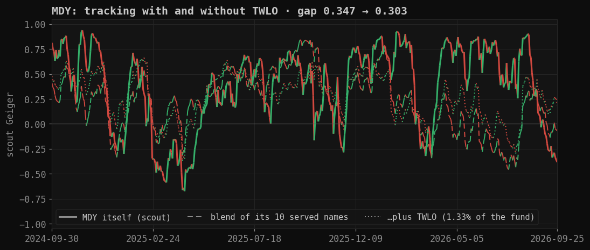
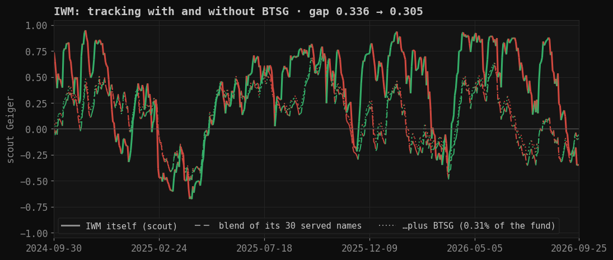
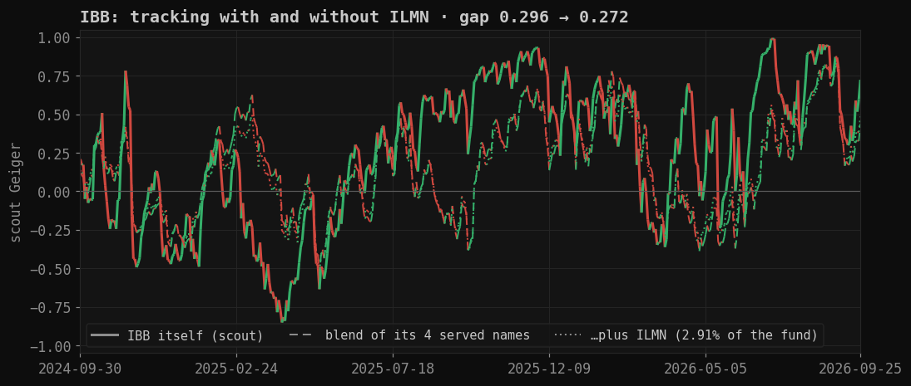
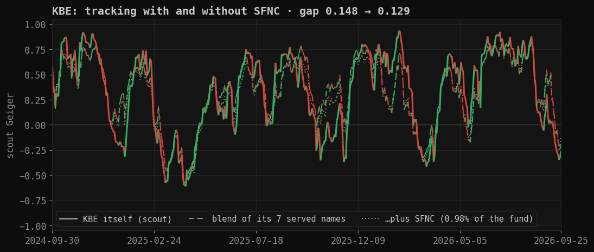
Lines follow the Hub rule: a day up is green, a day down is red. Solid = the fund itself; dashed = the blend of its served names; dotted = that blend with the best candidate added.
| # | name | best fund | gap closed (90% range) | word | vs served %ile | verdict | why · every fund it was tested in (weight) |
|---|---|---|---|---|---|---|---|
| 1 | TWLO | MDY | +0.044 (+0.006 to +0.082) | leaning | 100 | scout only | brings the blend closer to MDY in both halves, but the gain could still be luck once 328 tests are counted IYW 0.21% · MDY 1.33% |
| 2 | ATI | MDY | +0.042 (+0.015 to +0.067) | luck-proof | 100 | FULL HUB | closes more of MDY's Geiger gap than 100% of the names already served in it, and the gain survives the test count in both halves ITA 1.92% · MDY 0.73% |
| 3 | NVT | MDY | +0.041 (+0.019 to +0.063) | luck-proof | 100 | FULL HUB | closes more of MDY's Geiger gap than 100% of the names already served in it, and the gain survives the test count in both halves MDY 0.76% |
| 4 | XPO | MDY | +0.039 (+0.026 to +0.051) | luck-proof | 100 | FULL HUB | closes more of MDY's Geiger gap than 100% of the names already served in it, and the gain survives the test count in both halves MDY 0.60% |
| 5 | GKOS | IJR | +0.038 (-0.012 to +0.093) | leaning | 100 | scout only | brings the blend closer to IJR in both halves, but the gain could still be luck once 328 tests are counted IJR 0.53% |
| 6 | FTI | MDY | +0.034 (+0.017 to +0.050) | luck-proof | 100 | FULL HUB | closes more of MDY's Geiger gap than 100% of the names already served in it, and the gain survives the test count in both halves IYE 1.19% · VDE 1.20% · MDY 0.80% |
| 7 | USFD | MDY | +0.034 (+0.017 to +0.050) | luck-proof | 100 | FULL HUB | closes more of MDY's Geiger gap than 100% of the names already served in it, and the gain survives the test count in both halves IYK 0.96% · MDY 0.59% · VDC 0.87% |
| 8 | BTSG | IWM | +0.031 (+0.019 to +0.044) | luck-proof | 100 | FULL HUB | closes more of IWM's Geiger gap than 100% of the names already served in it, and the gain survives the test count in both halves IWM 0.31% |
| 9 | RHP | IJR | +0.031 (-0.006 to +0.074) | leaning | 100 | scout only | brings the blend closer to IJR in both halves, but the gain could still be luck once 328 tests are counted IJR 0.49% |
| 10 | SNX | MDY | +0.030 (+0.011 to +0.052) | luck-proof | 100 | FULL HUB | closes more of MDY's Geiger gap than 100% of the names already served in it, and the gain survives the test count in both halves MDY 0.60% |
| 11 | KRYS | XBI | +0.030 (+0.014 to +0.047) | luck-proof | 100 | FULL HUB | closes more of XBI's Geiger gap than 100% of the names already served in it, and the gain survives the test count in both halves XBI 1.45% · IWM 0.30% |
| 12 | MOG.A | IWM | +0.029 (+0.017 to +0.042) | luck-proof | 100 | FULL HUB | closes more of IWM's Geiger gap than 100% of the names already served in it, and the gain survives the test count in both halves IWM 0.36% |
| 13 | UMBF | IWM | +0.024 (+0.015 to +0.035) | luck-proof | 100 | FULL HUB | closes more of IWM's Geiger gap than 100% of the names already served in it, and the gain survives the test count in both halves IWM 0.33% |
| 14 | ILMN | IBB | +0.024 (+0.013 to +0.037) | luck-proof | 50 | FULL HUB | closes more of IBB's Geiger gap than 50% of the names already served in it, and the gain survives the test count in both halves IBB 2.91% |
| 15 | PTGX | IJR | +0.023 (-0.020 to +0.069) | leaning | 50 | scout only | brings the blend closer to IJR in both halves, but the gain could still be luck once 328 tests are counted IJR 0.52% |
| 16 | HUT | IWM | +0.022 (+0.014 to +0.030) | luck-proof | 100 | FULL HUB | closes more of IWM's Geiger gap than 100% of the names already served in it, and the gain survives the test count in both halves IWM 0.35% |
| 17 | NTRA | XBI | +0.021 (-0.001 to +0.039) | no gain | 100 | scout only | adding it does not bring the blend closer to XBI's Geiger in both halves IYH 0.87% · IBB 3.88% · XBI 1.83% · VHT 0.61% |
| 18 | RVMD | IBB | +0.020 (+0.007 to +0.032) | luck-proof | 25 | scout only | the gain is real but smaller than what the typical served name in IBB already adds (25th percentile) IBB 2.72% |
| 19 | BIIB | XBI | +0.020 (-0.005 to +0.044) | leaning | 100 | scout only | brings the blend closer to XBI in both halves, but the gain could still be luck once 328 tests are counted IBB 2.34% · XBI 1.58% |
| 20 | SFNC | KBE | +0.019 (+0.009 to +0.030) | luck-proof | 86 | FULL HUB | closes more of KBE's Geiger gap than 86% of the names already served in it, and the gain survives the test count in both halves KBE 0.98% |
| 21 | ENTG | MDY | +0.019 (-0.007 to +0.043) | no gain | 100 | scout only | adding it does not bring the blend closer to MDY's Geiger in both halves SOXX 1.12% · MDY 0.66% |
| 22 | CATY | KBE | +0.017 (+0.009 to +0.024) | luck-proof | 86 | FULL HUB | closes more of KBE's Geiger gap than 86% of the names already served in it, and the gain survives the test count in both halves KBE 0.97% |
| 23 | TRMK | KBE | +0.017 (+0.011 to +0.022) | luck-proof | 86 | FULL HUB | closes more of KBE's Geiger gap than 86% of the names already served in it, and the gain survives the test count in both halves KBE 0.99% |
| 24 | CVBF | KBE | +0.014 (+0.005 to +0.022) | luck-proof | 71 | FULL HUB | closes more of KBE's Geiger gap than 71% of the names already served in it, and the gain survives the test count in both halves KBE 0.98% |
| 25 | ARGX | IBB | +0.013 (-0.003 to +0.030) | leaning | 25 | scout only | brings the blend closer to IBB in both halves, but the gain could still be luck once 328 tests are counted IBB 3.77% |
| 26 | NBTB | KBE | +0.013 (+0.003 to +0.024) | leaning | 71 | scout only | brings the blend closer to KBE in both halves, but the gain could still be luck once 328 tests are counted KBE 0.97% |
| 27 | INCY | IBB | +0.013 (+0.008 to +0.018) | luck-proof | 25 | scout only | the gain is real but smaller than what the typical served name in IBB already adds (25th percentile) IBB 1.77% |
| 28 | VSAT | IWM | +0.012 (-0.004 to +0.025) | no gain | 100 | scout only | adding it does not bring the blend closer to IWM's Geiger in both halves IWM 0.31% · IJR 0.59% |
| 29 | SYBT | KBE | +0.012 (+0.001 to +0.024) | leaning | 57 | scout only | brings the blend closer to KBE in both halves, but the gain could still be luck once 328 tests are counted KBE 0.98% |
| 30 | CIEN | IYZ | +0.012 (+0.006 to +0.017) | luck-proof | 77 | FULL HUB | closes more of IYZ's Geiger gap than 77% of the names already served in it, and the gain survives the test count in both halves IYZ 3.38% |
| 31 | TXG | IWM | +0.011 (-0.006 to +0.027) | no gain | 93 | scout only | adding it does not bring the blend closer to IWM's Geiger in both halves IWM 0.33% |
| 32 | FROG | IWM | +0.011 (-0.000 to +0.023) | no gain | 93 | scout only | adding it does not bring the blend closer to IWM's Geiger in both halves IWM 0.34% |
| 33 | GEHC | IHI | +0.010 (+0.003 to +0.018) | luck-proof | 50 | FULL HUB | closes more of IHI's Geiger gap than 50% of the names already served in it, and the gain survives the test count in both halves IHI 4.18% |
| 34 | CRSP | XBI | +0.009 (-0.008 to +0.030) | no gain | 77 | scout only | adding it does not bring the blend closer to XBI's Geiger in both halves XBI 1.46% |
| 35 | EXEL | XBI | +0.008 (-0.013 to +0.029) | no gain | 69 | scout only | adding it does not bring the blend closer to XBI's Geiger in both halves XBI 1.46% |
| 36 | TWST | XBI | +0.007 (-0.024 to +0.040) | no gain | 69 | scout only | adding it does not bring the blend closer to XBI's Geiger in both halves XBI 2.13% · IWM 0.40% |
| 37 | INSM | IBB | +0.006 (-0.004 to +0.015) | no gain | 25 | scout only | adding it does not bring the blend closer to IBB's Geiger in both halves IBB 1.85% |
| 38 | MRNA | IBB | +0.006 (-0.018 to +0.034) | no gain | 25 | scout only | adding it does not bring the blend closer to IBB's Geiger in both halves SPY 0.11% · IYH 1.11% · IBB 5.02% · XBI 2.14% |
| 39 | DXCM | IHI | +0.006 (-0.004 to +0.016) | leaning | 25 | scout only | brings the blend closer to IHI in both halves, but the gain could still be luck once 328 tests are counted IHI 4.60% |
| 40 | IDXX | IHI | +0.006 (-0.005 to +0.017) | leaning | 25 | scout only | brings the blend closer to IHI in both halves, but the gain could still be luck once 328 tests are counted VHT 0.61% · IHI 4.48% |
| 41 | UI | IYZ | +0.006 (+0.002 to +0.009) | luck-proof | 77 | FULL HUB | closes more of IYZ's Geiger gap than 77% of the names already served in it, and the gain survives the test count in both halves IYZ 2.88% |
| 42 | CBC | KBE | +0.006 (-0.003 to +0.015) | no gain | 57 | scout only | adding it does not bring the blend closer to KBE's Geiger in both halves KBE 0.97% |
| 43 | STE | IHI | +0.005 (-0.002 to +0.012) | no gain | 25 | scout only | adding it does not bring the blend closer to IHI's Geiger in both halves IHI 2.84% |
| 44 | TIGO | IYZ | +0.005 (-0.000 to +0.010) | leaning | 77 | scout only | brings the blend closer to IYZ in both halves, but the gain could still be luck once 328 tests are counted IYZ 2.66% |
| 45 | VIAV | IYZ | +0.004 (-0.001 to +0.009) | no gain | 77 | scout only | adding it does not bring the blend closer to IYZ's Geiger in both halves IYZ 2.61% |
| 46 | RMD | IHI | +0.004 (-0.003 to +0.012) | leaning | 25 | scout only | brings the blend closer to IHI in both halves, but the gain could still be luck once 328 tests are counted IHI 4.46% |
| 47 | TER | SOXX | +0.004 (+0.001 to +0.007) | luck-proof | 68 | scout only | the gain is real but below 0.005 Geiger points, so it would not change a number the Hub shows for SOXX SPY 0.09% · SMH 1.23% · SOXX 2.98% · QQQ 0.25% · IYW 0.29% · VGT 0.25% |
| 48 | SATS | IYZ | +0.003 (-0.002 to +0.009) | no gain | 69 | scout only | adding it does not bring the blend closer to IYZ's Geiger in both halves IYZ 2.75% |
| 49 | EW | IHI | +0.003 (-0.010 to +0.015) | leaning | 0 | scout only | brings the blend closer to IHI in both halves, but the gain could still be luck once 328 tests are counted IYH 0.76% · VHT 0.72% · IHI 4.48% |
| 50 | MPWR | SOXX | +0.003 (+0.001 to +0.005) | leaning | 58 | scout only | brings the blend closer to SOXX in both halves, but the gain could still be luck once 328 tests are counted SPY 0.10% · SMH 1.19% · SOXX 3.14% · QQQ 0.27% · IYW 0.30% · VGT 0.27% |
| 51 | EAT | IWM | +0.003 (-0.013 to +0.020) | no gain | 83 | scout only | adding it does not bring the blend closer to IWM's Geiger in both halves IWM 0.30% |
| 52 | KIM | VNQ | +0.002 (+0.001 to +0.003) | luck-proof | 77 | scout only | the gain is real but below 0.005 Geiger points, so it would not change a number the Hub shows for VNQ IYR 1.17% · VNQ 0.99% |
| 53 | CVNA | IYC | +0.002 (+0.001 to +0.002) | luck-proof | 86 | scout only | the gain is real but below 0.005 Geiger points, so it would not change a number the Hub shows for IYC IYC 0.80% · VCR 0.66% |
| 54 | HST | VNQ | +0.002 (+0.001 to +0.003) | luck-proof | 73 | scout only | the gain is real but below 0.005 Geiger points, so it would not change a number the Hub shows for VNQ IYR 1.19% · VNQ 0.93% |
| 55 | NI | IDU | +0.002 (+0.001 to +0.003) | luck-proof | 63 | scout only | the gain is real but below 0.005 Geiger points, so it would not change a number the Hub shows for IDU IDU 1.28% · VPU 1.34% |
| 56 | CW | ITA | +0.002 (+0.000 to +0.003) | leaning | 73 | scout only | brings the blend closer to ITA in both halves, but the gain could still be luck once 328 tests are counted ITA 1.52% |
| 57 | STT | IYF | +0.002 (+0.001 to +0.003) | luck-proof | 68 | scout only | the gain is real but below 0.005 Geiger points, so it would not change a number the Hub shows for IYF IYF 0.77% · VFH 0.58% |
| 58 | PEN | IHI | +0.002 (-0.003 to +0.007) | no gain | 0 | scout only | adding it does not bring the blend closer to IHI's Geiger in both halves IHI 1.76% |
| 59 | ROKU | IYZ | +0.002 (-0.002 to +0.005) | leaning | 69 | scout only | brings the blend closer to IYZ in both halves, but the gain could still be luck once 328 tests are counted IYZ 2.87% · VOX 1.25% |
| 60 | WAB | IYJ | +0.001 (+0.001 to +0.002) | luck-proof | 78 | scout only | the gain is real but below 0.005 Geiger points, so it would not change a number the Hub shows for IYJ IYJ 0.61% · VIS 0.70% |
| 61 | NRG | VPU | +0.001 (-0.000 to +0.003) | no gain | 57 | scout only | adding it does not bring the blend closer to VPU's Geiger in both halves IDU 1.36% · VPU 1.51% |
| 62 | EVRG | IDU | +0.001 (+0.001 to +0.002) | luck-proof | 58 | scout only | the gain is real but below 0.005 Geiger points, so it would not change a number the Hub shows for IDU IDU 1.22% · VPU 1.28% |
| 63 | AA | VAW | +0.001 (+0.001 to +0.002) | luck-proof | 69 | scout only | the gain is real but below 0.005 Geiger points, so it would not change a number the Hub shows for VAW VAW 0.85% |
| 64 | FITB | IYF | +0.001 (+0.001 to +0.002) | luck-proof | 64 | scout only | the gain is real but below 0.005 Geiger points, so it would not change a number the Hub shows for IYF IYF 0.74% · VFH 0.54% |
| 65 | WPC | IYR | +0.001 (+0.000 to +0.002) | luck-proof | 67 | scout only | the gain is real but below 0.005 Geiger points, so it would not change a number the Hub shows for IYR IYR 1.18% · VNQ 0.97% |
| 66 | KEYS | IYJ | +0.001 (+0.000 to +0.002) | leaning | 73 | scout only | brings the blend closer to IYJ in both halves, but the gain could still be luck once 328 tests are counted SPY 0.09% · VGT 0.25% · IYJ 0.76% |
| 67 | TFC | IYF | +0.001 (+0.000 to +0.002) | luck-proof | 64 | scout only | the gain is real but below 0.005 Geiger points, so it would not change a number the Hub shows for IYF IYF 0.92% · VFH 0.67% |
| 68 | IQV | VHT | +0.001 (+0.000 to +0.002) | luck-proof | 76 | scout only | the gain is real but below 0.005 Geiger points, so it would not change a number the Hub shows for VHT VHT 0.60% |
| 69 | ROK | VIS | +0.001 (+0.000 to +0.002) | leaning | 76 | scout only | brings the blend closer to VIS in both halves, but the gain could still be luck once 328 tests are counted IYJ 0.61% · VIS 0.68% |
| 70 | LNT | VPU | +0.001 (+0.000 to +0.002) | luck-proof | 52 | scout only | the gain is real but below 0.005 Geiger points, so it would not change a number the Hub shows for VPU VPU 1.10% |
| 71 | CNP | IDU | +0.001 (+0.000 to +0.002) | leaning | 50 | scout only | brings the blend closer to IDU in both halves, but the gain could still be luck once 328 tests are counted IDU 1.65% · VPU 1.78% |
| 72 | ESS | VNQ | +0.001 (-0.001 to +0.002) | leaning | 68 | scout only | brings the blend closer to VNQ in both halves, but the gain could still be luck once 328 tests are counted IYR 1.37% · VNQ 1.13% |
| 73 | WY | VNQ | +0.001 (-0.001 to +0.003) | leaning | 68 | scout only | brings the blend closer to VNQ in both halves, but the gain could still be luck once 328 tests are counted IYR 1.14% · VNQ 1.04% |
| 74 | ASX | SOXX | +0.001 (+0.000 to +0.002) | no gain | 58 | scout only | adding it does not bring the blend closer to SOXX's Geiger in both halves SOXX 0.88% |
| 75 | PPL | IDU | +0.001 (-0.000 to +0.002) | leaning | 50 | scout only | brings the blend closer to IDU in both halves, but the gain could still be luck once 328 tests are counted IDU 1.64% · VPU 1.76% |
| 76 | A | IYH | +0.001 (+0.000 to +0.002) | leaning | 67 | scout only | brings the blend closer to IYH in both halves, but the gain could still be luck once 328 tests are counted IYH 0.76% |
| 77 | RDDT | VOX | +0.001 (-0.000 to +0.002) | no gain | 64 | scout only | adding it does not bring the blend closer to VOX's Geiger in both halves VOX 1.05% |
| 78 | UAL | IYC | +0.001 (+0.000 to +0.002) | luck-proof | 81 | scout only | the gain is real but below 0.005 Geiger points, so it would not change a number the Hub shows for IYC IYC 0.64% |
| 79 | FOX | VOX | +0.001 (+0.000 to +0.001) | luck-proof | 64 | scout only | the gain is real but below 0.005 Geiger points, so it would not change a number the Hub shows for VOX VOX 0.48% |
| 80 | HUM | IYH | +0.001 (-0.000 to +0.002) | no gain | 62 | scout only | adding it does not bring the blend closer to IYH's Geiger in both halves IYH 0.71% · VHT 0.64% |
| 81 | RS | IYM | +0.001 (-0.002 to +0.004) | no gain | 56 | scout only | adding it does not bring the blend closer to IYM's Geiger in both halves IYM 2.03% · VAW 1.26% |
| 82 | CRS | ITA | +0.001 (-0.001 to +0.003) | leaning | 73 | scout only | brings the blend closer to ITA in both halves, but the gain could still be luck once 328 tests are counted ITA 1.50% · IYM 2.00% |
| 83 | EXPE | VCR | +0.001 (-0.000 to +0.001) | leaning | 81 | scout only | brings the blend closer to VCR in both halves, but the gain could still be luck once 328 tests are counted VCR 0.62% |
| 84 | PR | VDE | +0.001 (+0.000 to +0.001) | luck-proof | 68 | scout only | the gain is real but below 0.005 Geiger points, so it would not change a number the Hub shows for VDE IYE 0.75% · VDE 0.64% |
| 85 | NET | IYW | +0.001 (-0.000 to +0.001) | no gain | 81 | scout only | adding it does not bring the blend closer to IYW's Geiger in both halves IYW 0.55% · VGT 0.41% |
| 86 | EQR | IYR | +0.001 (-0.003 to +0.005) | no gain | 56 | scout only | adding it does not bring the blend closer to IYR's Geiger in both halves IYR 3.45% |
| 87 | DG | VDC | +0.001 (-0.001 to +0.002) | leaning | 76 | scout only | brings the blend closer to VDC in both halves, but the gain could still be luck once 328 tests are counted VDC 1.03% |
| 88 | RBRK | IGV | +0.001 (-0.000 to +0.001) | leaning | 71 | scout only | brings the blend closer to IGV in both halves, but the gain could still be luck once 328 tests are counted IGV 0.63% |
| 89 | TKO | VOX | +0.001 (-0.000 to +0.001) | leaning | 59 | scout only | brings the blend closer to VOX in both halves, but the gain could still be luck once 328 tests are counted VOX 0.68% |
| 90 | OVV | VDE | +0.001 (+0.000 to +0.001) | luck-proof | 68 | scout only | the gain is real but below 0.005 Geiger points, so it would not change a number the Hub shows for VDE IYE 0.72% · VDE 0.72% |
| 91 | DLTR | VDC | +0.001 (-0.001 to +0.002) | no gain | 76 | scout only | adding it does not bring the blend closer to VDC's Geiger in both halves VDC 0.87% |
| 92 | NDAQ | VFH | +0.001 (+0.000 to +0.001) | leaning | 62 | scout only | brings the blend closer to VFH in both halves, but the gain could still be luck once 328 tests are counted VFH 0.49% |
| 93 | INVH | VNQ | +0.001 (-0.001 to +0.002) | no gain | 59 | scout only | adding it does not bring the blend closer to VNQ's Geiger in both halves IYR 1.12% · VNQ 0.96% |
| 94 | CASY | VDC | +0.000 (-0.001 to +0.002) | leaning | 76 | scout only | brings the blend closer to VDC in both halves, but the gain could still be luck once 328 tests are counted IYK 1.03% · VDC 1.01% |
| 95 | MTSI | SOXX | +0.000 (-0.001 to +0.002) | no gain | 53 | scout only | adding it does not bring the blend closer to SOXX's Geiger in both halves SOXX 1.00% |
| 96 | HPE | IYW | +0.000 (+0.000 to +0.001) | luck-proof | 77 | scout only | the gain is real but below 0.005 Geiger points, so it would not change a number the Hub shows for IYW SPY 0.13% · IYW 0.40% · VGT 0.31% |
| 97 | WWD | ITA | +0.000 (-0.001 to +0.002) | leaning | 73 | scout only | brings the blend closer to ITA in both halves, but the gain could still be luck once 328 tests are counted ITA 1.46% |
| 98 | CMS | IDU | +0.000 (-0.000 to +0.001) | no gain | 46 | scout only | adding it does not bring the blend closer to IDU's Geiger in both halves IDU 1.34% · VPU 1.44% |
| 99 | FLEX | IYW | +0.000 (+0.000 to +0.001) | luck-proof | 77 | scout only | the gain is real but below 0.005 Geiger points, so it would not change a number the Hub shows for IYW IYW 0.20% |
| 100 | CCL | VCR | +0.000 (-0.000 to +0.001) | no gain | 77 | scout only | adding it does not bring the blend closer to VCR's Geiger in both halves VCR 0.51% |
| 101 | GSAT | IYZ | +0.000 (-0.005 to +0.005) | no gain | 69 | scout only | adding it does not bring the blend closer to IYZ's Geiger in both halves IYZ 2.71% |
| 102 | AMP | VFH | +0.000 (-0.001 to +0.001) | no gain | 56 | scout only | adding it does not bring the blend closer to VFH's Geiger in both halves VFH 0.55% |
| 103 | BDX | VHT | +0.000 (-0.001 to +0.001) | no gain | 52 | scout only | adding it does not bring the blend closer to VHT's Geiger in both halves VHT 0.72% |
| 104 | MET | IYF | +0.000 (-0.001 to +0.001) | no gain | 50 | scout only | adding it does not bring the blend closer to IYF's Geiger in both halves IYF 0.84% · VFH 0.57% |
| 105 | FTNT | IGV | +0.000 (-0.004 to +0.005) | no gain | 67 | scout only | adding it does not bring the blend closer to IGV's Geiger in both halves SPY 0.17% · IGV 3.78% · QQQ 0.55% · IYW 0.52% · VGT 0.46% |
| 106 | FERG | VIS | +0.000 (-0.001 to +0.001) | leaning | 61 | scout only | brings the blend closer to VIS in both halves, but the gain could still be luck once 328 tests are counted VIS 0.63% |
| 107 | CHD | IYK | +0.000 (-0.001 to +0.001) | no gain | 45 | scout only | adding it does not bring the blend closer to IYK's Geiger in both halves IYK 1.05% · VDC 0.89% |
| 108 | TBBK | KBE | +0.000 (-0.013 to +0.010) | no gain | 57 | scout only | adding it does not bring the blend closer to KBE's Geiger in both halves KBE 0.97% |
| 109 | SKHYV | SMH | +0.000 (+0.000 to +0.000) | no gain | 47 | scout only | adding it does not bring the blend closer to SMH's Geiger in both halves SMH 4.50% · SOXX 3.11% |
| 110 | VMRK | VNQ | +0.000 (-0.000 to +0.000) | no gain | 45 | scout only | adding it does not bring the blend closer to VNQ's Geiger in both halves VNQ 2.89% |
| 111 | EBAY | IYC | +0.000 (-0.001 to +0.001) | no gain | 53 | scout only | adding it does not bring the blend closer to IYC's Geiger in both halves IYC 0.77% · VCR 0.67% |
| 112 | NYT | VOX | -0.000 (-0.001 to +0.001) | no gain | 50 | scout only | adding it does not bring the blend closer to VOX's Geiger in both halves VOX 0.59% |
| 113 | NTNX | IGV | -0.000 (-0.001 to +0.001) | no gain | 63 | scout only | adding it does not bring the blend closer to IGV's Geiger in both halves IGV 0.64% |
| 114 | NLY | IYR | -0.000 (-0.002 to +0.002) | no gain | 44 | scout only | adding it does not bring the blend closer to IYR's Geiger in both halves IYR 1.22% |
| 115 | ECHO | VOX | -0.000 (-0.000 to +0.000) | no gain | 50 | scout only | adding it does not bring the blend closer to VOX's Geiger in both halves VOX 0.68% |
| 116 | MLI | IYM | -0.000 (-0.002 to +0.002) | no gain | 38 | scout only | adding it does not bring the blend closer to IYM's Geiger in both halves IYM 1.35% |
| 117 | ONC | IBB | -0.000 (-0.009 to +0.008) | no gain | 25 | scout only | adding it does not bring the blend closer to IBB's Geiger in both halves IBB 2.14% |
| 118 | GRMN | IYC | -0.000 (-0.001 to +0.001) | no gain | 47 | scout only | adding it does not bring the blend closer to IYC's Geiger in both halves IYC 0.87% · VCR 0.76% |
| 119 | FWONK | VOX | -0.000 (-0.001 to +0.001) | no gain | 50 | scout only | adding it does not bring the blend closer to VOX's Geiger in both halves VOX 1.29% |
| 120 | HONA | QQQ | -0.000 (-0.000 to +0.000) | no gain | 58 | scout only | adding it does not bring the blend closer to QQQ's Geiger in both halves QQQ 0.21% · IYJ 0.63% · VIS 0.72% · ITA 3.80% |
| 121 | AMRZ | VAW | -0.000 (-0.002 to +0.001) | no gain | 27 | scout only | adding it does not bring the blend closer to VAW's Geiger in both halves VAW 1.40% |
| 122 | HCA | SPY | -0.000 (-0.000 to +0.000) | no gain | 46 | scout only | adding it does not bring the blend closer to SPY's Geiger in both halves SPY 0.09% · IYH 0.96% · VHT 0.89% |
| 123 | ADSK | IGV | -0.000 (-0.001 to +0.001) | no gain | 63 | scout only | adding it does not bring the blend closer to IGV's Geiger in both halves IGV 1.53% · QQQ 0.18% · IYW 0.21% · VGT 0.25% |
| 124 | FE | IDU | -0.000 (-0.002 to +0.001) | no gain | 25 | scout only | adding it does not bring the blend closer to IDU's Geiger in both halves IDU 1.62% · VPU 1.73% |
| 125 | FANG | VDE | -0.000 (-0.001 to +0.001) | no gain | 32 | scout only | adding it does not bring the blend closer to VDE's Geiger in both halves QQQ 0.22% · IYE 1.69% · VDE 1.40% |
| 126 | MSI | SPY | -0.000 (-0.000 to -0.000) | no gain | 36 | scout only | adding it does not bring the blend closer to SPY's Geiger in both halves SPY 0.11% · VGT 0.35% · IYZ 3.48% |
| 127 | WSM | VCR | -0.000 (-0.001 to +0.000) | no gain | 62 | scout only | adding it does not bring the blend closer to VCR's Geiger in both halves VCR 0.48% |
| 128 | BWXT | ITA | -0.000 (-0.002 to +0.001) | no gain | 67 | scout only | adding it does not bring the blend closer to ITA's Geiger in both halves ITA 0.96% |
| 129 | CCEP | QQQ | -0.000 (-0.000 to -0.000) | no gain | 47 | scout only | adding it does not bring the blend closer to QQQ's Geiger in both halves QQQ 0.18% |
| 130 | APO | VFH | -0.000 (-0.001 to +0.001) | no gain | 32 | scout only | adding it does not bring the blend closer to VFH's Geiger in both halves IYF 0.81% · VFH 0.63% |
| 131 | JLL | IYR | -0.000 (-0.002 to +0.001) | no gain | 39 | scout only | adding it does not bring the blend closer to IYR's Geiger in both halves IYR 1.17% · VNQ 1.05% |
| 132 | HAL | VDE | -0.000 (-0.002 to +0.001) | no gain | 26 | scout only | adding it does not bring the blend closer to VDE's Geiger in both halves IYE 1.18% · VDE 1.18% |
| 133 | PYPL | QQQ | -0.000 (-0.001 to -0.000) | no gain | 42 | scout only | adding it does not bring the blend closer to QQQ's Geiger in both halves QQQ 0.19% · IYJ 0.56% |
| 134 | AZO | IYC | -0.000 (-0.002 to +0.001) | no gain | 39 | scout only | adding it does not bring the blend closer to IYC's Geiger in both halves IYC 0.84% · VCR 0.78% |
| 135 | NWSA | VOX | -0.000 (-0.001 to +0.000) | no gain | 45 | scout only | adding it does not bring the blend closer to VOX's Geiger in both halves VOX 0.67% |
| 136 | MCHP | QQQ | -0.000 (-0.001 to -0.000) | no gain | 39 | scout only | adding it does not bring the blend closer to QQQ's Geiger in both halves SMH 0.76% · SOXX 1.97% · QQQ 0.17% · IYW 0.19% |
| 137 | NXPI | QQQ | -0.000 (-0.001 to -0.000) | no gain | 39 | scout only | adding it does not bring the blend closer to QQQ's Geiger in both halves SMH 0.99% · QQQ 0.24% · VGT 0.25% |
| 138 | CI | SPY | -0.000 (-0.001 to -0.000) | no gain | 15 | scout only | adding it does not bring the blend closer to SPY's Geiger in both halves SPY 0.11% · IYH 1.08% · VHT 1.01% |
| 139 | NU | IYF | -0.001 (-0.001 to +0.000) | no gain | 32 | scout only | adding it does not bring the blend closer to IYF's Geiger in both halves IYF 0.75% |
| 140 | HEI.A | ITA | -0.001 (-0.002 to +0.001) | no gain | 53 | scout only | adding it does not bring the blend closer to ITA's Geiger in both halves ITA 1.31% |
| 141 | WDAY | IYW | -0.001 (-0.001 to -0.000) | no gain | 23 | scout only | adding it does not bring the blend closer to IYW's Geiger in both halves IGV 1.32% · IYW 0.18% |
| 142 | ALL | IYF | -0.001 (-0.002 to +0.001) | no gain | 32 | scout only | adding it does not bring the blend closer to IYF's Geiger in both halves IYF 0.93% · VFH 0.73% |
| 143 | BALL | VAW | -0.001 (-0.002 to +0.001) | no gain | 15 | scout only | adding it does not bring the blend closer to VAW's Geiger in both halves VAW 1.03% |
| 144 | ACN | SPY | -0.001 (-0.001 to -0.000) | no gain | 10 | scout only | adding it does not bring the blend closer to SPY's Geiger in both halves SPY 0.16% · VGT 0.48% |
| 145 | AVY | VAW | -0.001 (-0.002 to +0.001) | no gain | 15 | scout only | adding it does not bring the blend closer to VAW's Geiger in both halves VAW 0.86% |
| 146 | KHC | IYK | -0.001 (-0.002 to +0.001) | no gain | 30 | scout only | adding it does not bring the blend closer to IYK's Geiger in both halves IYK 0.95% · VDC 0.84% |
| 147 | CRCL | IGV | -0.001 (-0.001 to +0.000) | no gain | 29 | scout only | adding it does not bring the blend closer to IGV's Geiger in both halves IGV 0.64% |
| 148 | CARR | IYJ | -0.001 (-0.002 to +0.000) | no gain | 22 | scout only | adding it does not bring the blend closer to IYJ's Geiger in both halves IYJ 0.53% · VIS 0.63% |
| 149 | EL | VDC | -0.001 (-0.002 to +0.000) | no gain | 19 | scout only | adding it does not bring the blend closer to VDC's Geiger in both halves VDC 0.95% |
| 150 | MAA | VNQ | -0.001 (-0.002 to +0.001) | no gain | 23 | scout only | adding it does not bring the blend closer to VNQ's Geiger in both halves VNQ 0.93% |
| 151 | DINO | VDE | -0.001 (-0.001 to -0.000) | no gain | 16 | scout only | adding it does not bring the blend closer to VDE's Geiger in both halves VDE 0.63% |
| 152 | OHI | IYR | -0.001 (-0.002 to +0.001) | no gain | 33 | scout only | adding it does not bring the blend closer to IYR's Geiger in both halves IYR 1.10% |
| 153 | ON | SOXX | -0.001 (-0.003 to +0.002) | no gain | 42 | scout only | adding it does not bring the blend closer to SOXX's Geiger in both halves SMH 0.46% · SOXX 1.40% |
| 154 | TEAM | IGV | -0.001 (-0.003 to +0.001) | no gain | 25 | scout only | adding it does not bring the blend closer to IGV's Geiger in both halves IGV 1.06% |
| 155 | IFF | VAW | -0.001 (-0.003 to +0.001) | no gain | 15 | scout only | adding it does not bring the blend closer to VAW's Geiger in both halves IYM 2.27% · VAW 1.39% |
| 156 | FTAI | ITA | -0.001 (-0.003 to +0.001) | no gain | 53 | scout only | adding it does not bring the blend closer to ITA's Geiger in both halves ITA 1.36% |
| 157 | CCK | VAW | -0.001 (-0.002 to -0.000) | no gain | 15 | scout only | adding it does not bring the blend closer to VAW's Geiger in both halves VAW 0.84% |
| 158 | HSY | VDC | -0.001 (-0.002 to +0.000) | no gain | 19 | scout only | adding it does not bring the blend closer to VDC's Geiger in both halves IYK 1.12% · VDC 0.96% |
| 159 | MTCH | VOX | -0.001 (-0.002 to -0.000) | no gain | 41 | scout only | adding it does not bring the blend closer to VOX's Geiger in both halves VOX 0.54% · IJR 0.55% |
| 160 | CAH | VHT | -0.001 (-0.002 to +0.001) | no gain | 36 | scout only | adding it does not bring the blend closer to VHT's Geiger in both halves VHT 0.76% · IYK 2.43% |
| 161 | SUI | VNQ | -0.001 (-0.003 to +0.001) | no gain | 23 | scout only | adding it does not bring the blend closer to VNQ's Geiger in both halves VNQ 0.93% |
| 162 | COR | VHT | -0.001 (-0.003 to +0.001) | no gain | 36 | scout only | adding it does not bring the blend closer to VHT's Geiger in both halves VHT 0.83% · IYK 2.67% |
| 163 | LYB | VAW | -0.001 (-0.003 to +0.001) | no gain | 15 | scout only | adding it does not bring the blend closer to VAW's Geiger in both halves VAW 1.08% |
| 164 | ZM | IGV | -0.001 (-0.002 to +0.000) | no gain | 25 | scout only | adding it does not bring the blend closer to IGV's Geiger in both halves IGV 0.82% |
| 165 | AXON | VIS | -0.001 (-0.002 to +0.001) | no gain | 25 | scout only | adding it does not bring the blend closer to VIS's Geiger in both halves VIS 0.62% · ITA 2.74% |
| 166 | STZ | VDC | -0.001 (-0.002 to +0.000) | no gain | 14 | scout only | adding it does not bring the blend closer to VDC's Geiger in both halves IYK 0.80% · VDC 0.74% |
| 167 | ODFL | VIS | -0.001 (-0.003 to +0.000) | no gain | 25 | scout only | adding it does not bring the blend closer to VIS's Geiger in both halves VIS 0.54% |
| 168 | BG | IYK | -0.001 (-0.002 to -0.000) | no gain | 20 | scout only | adding it does not bring the blend closer to IYK's Geiger in both halves IYK 0.68% |
| 169 | EXE | VDE | -0.001 (-0.003 to +0.001) | no gain | 11 | scout only | adding it does not bring the blend closer to VDE's Geiger in both halves IYE 0.85% · VDE 0.88% |
| 170 | AFL | VFH | -0.001 (-0.002 to -0.000) | no gain | 24 | scout only | adding it does not bring the blend closer to VFH's Geiger in both halves IYF 0.83% · VFH 0.59% |
| 171 | CMG | IYC | -0.001 (-0.003 to +0.000) | no gain | 22 | scout only | adding it does not bring the blend closer to IYC's Geiger in both halves IYC 0.72% · VCR 0.80% |
| 172 | AJG | VFH | -0.001 (-0.002 to +0.000) | no gain | 24 | scout only | adding it does not bring the blend closer to VFH's Geiger in both halves IYF 0.92% · VFH 0.74% |
| 173 | EQT | VDE | -0.001 (-0.003 to +0.001) | no gain | 11 | scout only | adding it does not bring the blend closer to VDE's Geiger in both halves IYE 1.36% · VDE 1.25% |
| 174 | IP | VAW | -0.001 (-0.003 to +0.000) | no gain | 15 | scout only | adding it does not bring the blend closer to VAW's Geiger in both halves IYM 1.89% · VAW 1.23% |
| 175 | DHI | IYC | -0.001 (-0.002 to -0.000) | no gain | 22 | scout only | adding it does not bring the blend closer to IYC's Geiger in both halves IYC 0.62% · VCR 0.62% |
| 176 | TPL | VDE | -0.002 (-0.002 to -0.000) | no gain | 5 | scout only | adding it does not bring the blend closer to VDE's Geiger in both halves IYE 0.86% · VDE 0.71% |
| 177 | GIS | IYK | -0.002 (-0.003 to -0.000) | no gain | 15 | scout only | adding it does not bring the blend closer to IYK's Geiger in both halves IYK 0.86% · VDC 0.84% |
| 178 | PINS | VOX | -0.002 (-0.003 to -0.001) | no gain | 41 | scout only | adding it does not bring the blend closer to VOX's Geiger in both halves VOX 0.59% |
| 179 | RBC | IYM | -0.002 (-0.005 to +0.002) | no gain | 19 | scout only | adding it does not bring the blend closer to IYM's Geiger in both halves IYM 1.62% |
| 180 | CF | VAW | -0.002 (-0.003 to -0.000) | no gain | 12 | scout only | adding it does not bring the blend closer to VAW's Geiger in both halves IYM 1.88% · VAW 1.29% |
| 181 | YUM | IYC | -0.002 (-0.003 to -0.001) | no gain | 19 | scout only | adding it does not bring the blend closer to IYC's Geiger in both halves IYC 0.68% · VCR 0.68% |
| 182 | FICO | IGV | -0.002 (-0.003 to -0.001) | no gain | 21 | scout only | adding it does not bring the blend closer to IGV's Geiger in both halves IGV 0.64% |
| 183 | LNG | VDE | -0.002 (-0.005 to +0.001) | no gain | 0 | scout only | adding it does not bring the blend closer to VDE's Geiger in both halves IYE 2.50% · VDE 2.25% |
| 184 | FORM | IJR | -0.002 (-0.039 to +0.034) | no gain | 0 | scout only | adding it does not bring the blend closer to IJR's Geiger in both halves IJR 0.59% |
| 185 | TXT | ITA | -0.003 (-0.004 to -0.001) | no gain | 33 | scout only | adding it does not bring the blend closer to ITA's Geiger in both halves ITA 0.99% |
| 186 | ZBH | IHI | -0.003 (-0.008 to +0.003) | no gain | 0 | scout only | adding it does not bring the blend closer to IHI's Geiger in both halves IHI 2.38% |
| 187 | ALNY | IBB | -0.003 (-0.018 to +0.011) | no gain | 25 | scout only | adding it does not bring the blend closer to IBB's Geiger in both halves IBB 2.35% · XBI 1.45% |
| 188 | PAYX | VIS | -0.003 (-0.004 to -0.001) | no gain | 17 | scout only | adding it does not bring the blend closer to VIS's Geiger in both halves VIS 0.59% |
| 189 | WCN | VIS | -0.003 (-0.004 to -0.002) | no gain | 15 | scout only | adding it does not bring the blend closer to VIS's Geiger in both halves VIS 0.55% |
| 190 | EIX | VPU | -0.003 (-0.005 to -0.001) | no gain | 9 | scout only | adding it does not bring the blend closer to VPU's Geiger in both halves IDU 1.37% · VPU 1.42% |
| 191 | ROP | IGV | -0.003 (-0.005 to -0.001) | no gain | 21 | scout only | adding it does not bring the blend closer to IGV's Geiger in both halves IGV 1.24% |
| 192 | RSG | VIS | -0.003 (-0.004 to -0.002) | no gain | 14 | scout only | adding it does not bring the blend closer to VIS's Geiger in both halves VIS 0.64% · IDU 2.89% |
| 193 | ANTM | IYH | -0.004 (-0.007 to -0.001) | no gain | 24 | scout only | adding it does not bring the blend closer to IYH's Geiger in both halves IYH 1.35% |
| 194 | LBTYA | IYZ | -0.004 (-0.007 to -0.002) | no gain | 38 | scout only | adding it does not bring the blend closer to IYZ's Geiger in both halves IYZ 1.36% |
| 195 | AWK | VPU | -0.004 (-0.006 to -0.002) | no gain | 9 | scout only | adding it does not bring the blend closer to VPU's Geiger in both halves IDU 1.78% · VPU 1.73% |
| 196 | CRBG | KBE | -0.007 (-0.019 to +0.005) | no gain | 14 | scout only | adding it does not bring the blend closer to KBE's Geiger in both halves KBE 0.98% |
| 197 | IRDM | IYZ | -0.007 (-0.013 to -0.001) | no gain | 38 | scout only | adding it does not bring the blend closer to IYZ's Geiger in both halves IYZ 2.79% |
| 198 | HALO | XBI | -0.007 (-0.024 to +0.009) | no gain | 8 | scout only | adding it does not bring the blend closer to XBI's Geiger in both halves XBI 1.55% |
| 199 | TGTX | XBI | -0.008 (-0.033 to +0.018) | no gain | 8 | scout only | adding it does not bring the blend closer to XBI's Geiger in both halves XBI 1.54% · IJR 0.48% |
| 200 | EQH | KBE | -0.011 (-0.027 to +0.003) | no gain | 0 | scout only | adding it does not bring the blend closer to KBE's Geiger in both halves KBE 0.98% |
| 201 | OKTA | MDY | -0.030 (-0.070 to +0.015) | no gain | 0 | scout only | adding it does not bring the blend closer to MDY's Geiger in both halves MDY 0.99% |
| 202 | QRVO | IJR | -0.032 (-0.073 to +0.005) | no gain | 0 | scout only | adding it does not bring the blend closer to IJR's Geiger in both halves IJR 0.56% |
| 203 | SM | IJR | -0.056 (-0.087 to -0.026) | no gain | 0 | scout only | adding it does not bring the blend closer to IJR's Geiger in both halves IJR 0.49% |
| 204 | PAYC | IJR | -0.076 (-0.125 to -0.020) | no gain | 0 | scout only | adding it does not bring the blend closer to IJR's Geiger in both halves IJR 0.50% |
| 205 | BDXA | IYH | — | no scout series | scout only | no scout reading: the name has no bars in the US day files (not a US listing under this ticker, or too new) IYH 0.77% · IHI 4.49% | |
| 206 | CRH.L | IYJ | — | no scout series | scout only | no scout reading: the name has no bars in the US day files (not a US listing under this ticker, or too new) IYJ 0.70% | |
| 207 | UBSI | KRE | — | fund has no served name | ALAN DECIDES | KRE has no served name yet, so there is no blend to improve: alone, it tracks KRE's Geiger at a correlation of 0.8968 (gap 0.1374) KRE 1.13% | |
| 208 | FIBK | KRE | — | fund has no served name | ALAN DECIDES | KRE has no served name yet, so there is no blend to improve: alone, it tracks KRE's Geiger at a correlation of 0.8657 (gap 0.1687) KRE 1.13% | |
| 209 | ONB | KRE | — | fund has no served name | ALAN DECIDES | KRE has no served name yet, so there is no blend to improve: alone, it tracks KRE's Geiger at a correlation of 0.8889 (gap 0.1468) KRE 1.13% | |
| 210 | FULT | KRE | — | fund has no served name | ALAN DECIDES | KRE has no served name yet, so there is no blend to improve: alone, it tracks KRE's Geiger at a correlation of 0.9215 (gap 0.1246) KRE 1.13% | |
| 211 | HWC | KRE | — | fund has no served name | ALAN DECIDES | KRE has no served name yet, so there is no blend to improve: alone, it tracks KRE's Geiger at a correlation of 0.9536 (gap 0.1047) KRE 1.12% | |
| 212 | NIC | KRE | — | fund has no served name | ALAN DECIDES | KRE has no served name yet, so there is no blend to improve: alone, it tracks KRE's Geiger at a correlation of 0.6013 (gap 0.2794) KRE 1.12% | |
| 213 | EBC | KRE | — | fund has no served name | ALAN DECIDES | KRE has no served name yet, so there is no blend to improve: alone, it tracks KRE's Geiger at a correlation of 0.8079 (gap 0.1896) KRE 1.12% | |
| 214 | FHB | KRE | — | fund has no served name | ALAN DECIDES | KRE has no served name yet, so there is no blend to improve: alone, it tracks KRE's Geiger at a correlation of 0.8495 (gap 0.1827) KRE 1.12% | |
| 215 | EWBC | KRE | — | fund has no served name | ALAN DECIDES | KRE has no served name yet, so there is no blend to improve: alone, it tracks KRE's Geiger at a correlation of 0.9032 (gap 0.1365) KRE 1.12% | |
| 216 | COLB | KRE | — | fund has no served name | ALAN DECIDES | KRE has no served name yet, so there is no blend to improve: alone, it tracks KRE's Geiger at a correlation of 0.8121 (gap 0.1856) KRE 1.12% |
4 · THE MAP: WHICH PAGE OPENS, AND THE SCOUT BARS
Which page Alan sees. The workshop card "Market map · round 3 · the tree" opens /deliverables/20260928/market-map-r3/index.html. That is the top-down tree: flat at the top, becoming 3D blocks lower down, where the names need room. The Hub itself has no direct map link; its menu opens Prototypes. The 27 Sep map-workshop page (/deliverables/20260927/map-workshop/MAP-WORKSHOP.html) still sent its "open the map" link to the old 3D wheel (/deliverables/20260927/market-map/index.html); that was probably how you kept landing on the wheel. On this branch that link now opens round 3. The wheel page itself is unchanged.
Scout bars. A ball waiting for admission now carries a slim scout bar where it had none (34 of the 35 waiting balls; IBIT, a bitcoin fund, has no US stock day-file bars). A fund card now shows the scout blend of all its holdings with coverage, the fund's own scout reading, and the divergence between the two, both scout, same close. The key explains the slim bar. The full Geiger bars are unchanged.
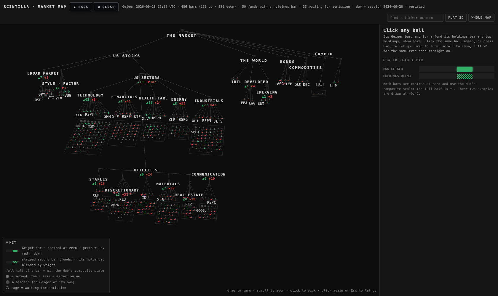
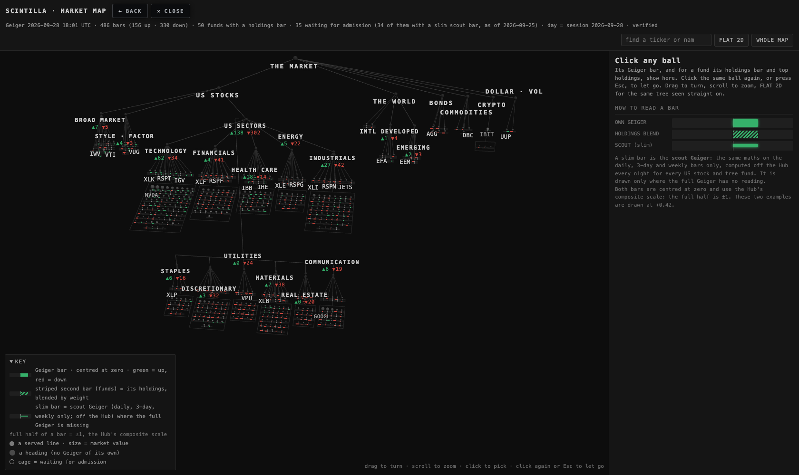
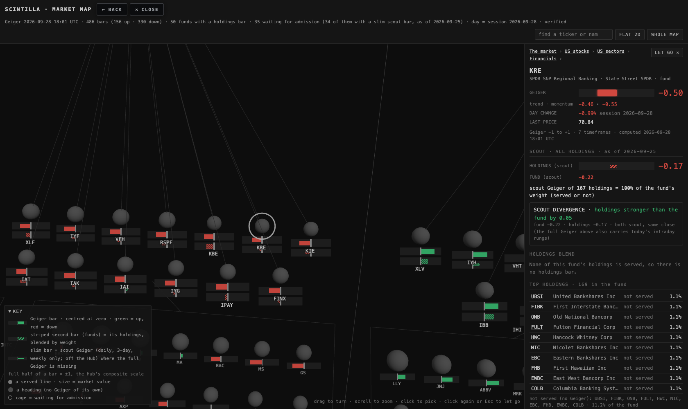
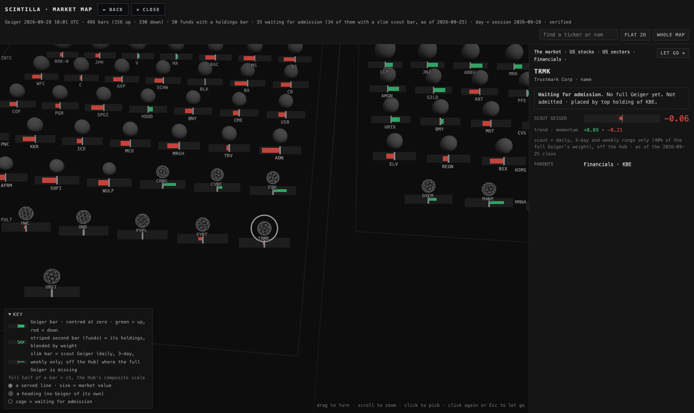
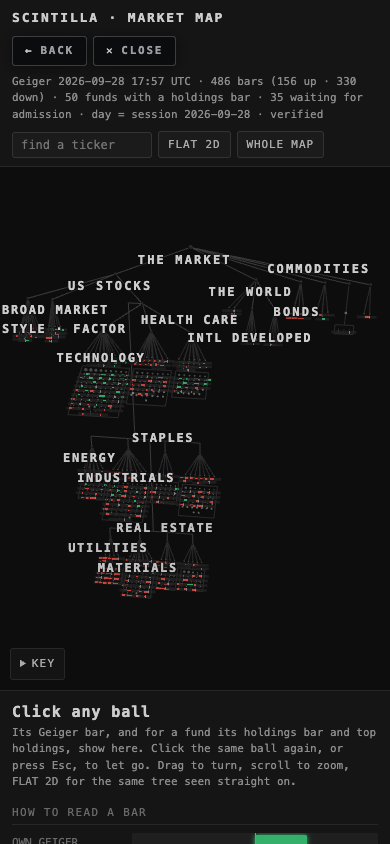
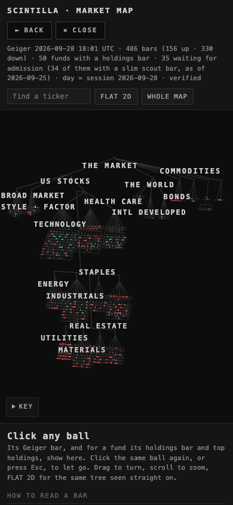
Screenshots from headless Chrome on this Mac, never a visible window. The chart API only answers scintillahub.ai, so that throwaway browser ran with the cross-origin check relaxed; the page itself is unchanged. The first after-shot run caught a real bug (a reserved word in the bar shader blanked every bar); it was fixed, and a test now guards it.
WHERE EACH NUMBER COMES FROM
- Prices: Massive's daily files in our R2 copy (1092 days, to 17 Aug), then Massive grouped daily (28 days). 2022-04-08 → 2026-09-25, 1121 sessions. One day had no data: 9 Jan 2025, when the market was closed. Split-adjusted with Massive's split list (6,354 splits).
- Maths and weights: the live publisher's code, and the live Geiger's own list of rungs and weights, read from the chart API at run time.
- Full Geiger: the chart API
/geiger, computed 2026-09-28 17:53 UTC. - Tree, holdings, proposals: the coverage lane's files (125 funds, FMP holdings of 26 and 28 Sep) and the round-3 map's nodes.
- Run:
scout-geiger-analysis-20260928T175815Z-32eca6, codebaf6d79. Raw numbers:data/beside this page.
WHAT COULD BE WRONG
- The scout-to-full comparison is a single moment, with the intraday rungs partly on Monday's session. It says how different the two are today, not on average. The nightly table will give the history.
- Renamed tickers: a ticker that changed its symbol in the last 4½ years has its history split. It reads on fewer bars until the new symbol has its own history. 49 names read on daily + 3-day only and 13 on daily only, which are mostly young listings; the
rungs_usedcolumn says which. - Holdings files are FMP's. Some list only part of a fund (DRAM, VT); coverage is always stated against the whole fund.
- The admission check tracks the fund's own scout Geiger, not its full Geiger, because the full Geiger has no daily history to test against.
- Very large funds (SPY, QQQ): removing or adding one name barely moves the blend, so the yardstick is near zero. That is why the visible-gain rule matters there.
WHAT I DID NOT DO
- Build or push an image, create the table, write any row, install the schedule, or deploy the chart API or the Hub. All of that is in the runbook for the coordinator.
- Re-do the coverage lane's greedy smallest-set study; this check adds to it.
- Change any full-Geiger bar, the Equalizer, or any price table.
DECISIONS FOR ALAN
- Admit the 19 FULL HUB names, mostly MDY, IWM, KBE and biotech lines. Recommend yes. They are the only proposals that visibly improve how the Hub reads their fund. Keep the other 187 as scout-only.
- Switch on the nightly scout job and table (runbook; about 2 minutes a night). Recommend yes. It gives every US stock a Geiger, gives the map its bars nightly, and builds the history needed to read fund divergence against each fund's usual level.
- KRE: it has no served name. Recommend admitting HWC and FULT, the two proposals that track KRE best on their own (0.95 and 0.92), as KRE's first served names. The rest stay scout-only.